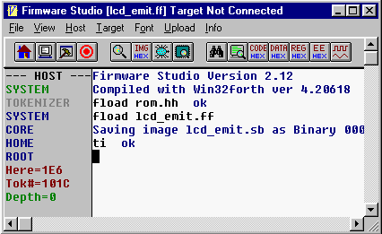

Found?
IF Execute it
ELSE
ENDIF
Firmware Studio Development Environment
| Host | Builder | Tester | Tokenizer | Forthing |
Tokenizer Interpreter
Tokenizer mode is for appending tokenized code to the target image. In the example below I launched Firmware Studio, loaded a token assignment file, and loaded the driver code for an LCD module. The resulting lcd_emit.sb file is the ROM image (tokenized code with a boilerplate) that gets loaded into the LCD module's serial EEPROM.
All this was done without source code for the system's ROM. An end user can write add-on code given only the token assignment file and some guidance as to how to use the language.

You can enter tokenizer mode by typing TI or TOKENIZING. In tokenizer mode, the left margin displays the same as in host mode.
The tokenizer interpreter is the simplest of all the interpreters:
| Search the search order for the
word Found? IF Execute it ELSE ENDIF |
Token values are represented by either one or two bytes. The most-used tokens are 1-byte values between 32 and 255. Values between 1 and 31 cause a second byte to be fetched and combined with the first to form a number between 256 and 8191. If the first byte is zero, two bytes are fetched to form all remaining 16-bit values.
Token value zero and any other three-byte tokens are included for future expansion. Currently, TOF doesn't use and probably won't work with three-byte tokens.